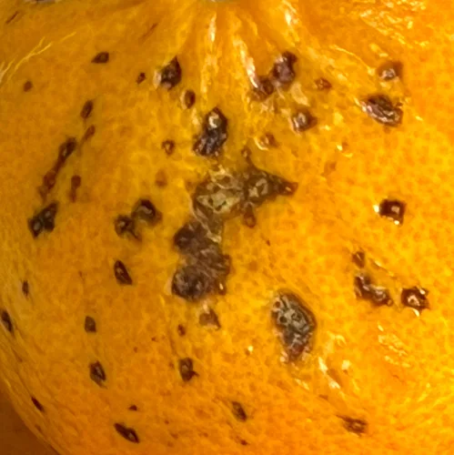

转色柑橘果皮出现边界清楚的深色斑
柑橘转色时检查果面。细小深色斑点和边界清楚的较大硬斑可能同时存在。如果多个果实均有相似表现，可将柑橘黑斑病列入排查范围。

观察不同大小的斑
查看是否有深色边缘、较浅且略下陷的中心。小斑与成熟病斑都要拍照。黑斑病的果面表现有多种，同一果实上的斑不一定完全相同。
看斑面高低
用侧光对比斑面和周围果皮的高度。若为明显隆起、有水渍边缘的木栓状斑，应考虑柑橘溃疡病等其他原因。天气损伤和别的真菌也可使果皮留斑。
先让果实留在枝上
拍一张特写和一张整株照。怀疑黑斑病时，移动果实、叶片或剪枝前联系当地植保检疫机构，由其判断是否需要现场检查。
比较同等成熟度的果实
记下品种、转色阶段，并观察几枚颜色相近的果。果皮转色会让原有斑点更显眼。若记录斑点似乎增多，务必在照片旁保留日期。
记录带斑果是眼前这株树上长的，还是来自外购混装水果。一枚外地橙的照片可用于果品检查，却不能据此判断购买地附近的柑橘树也有同样病害。